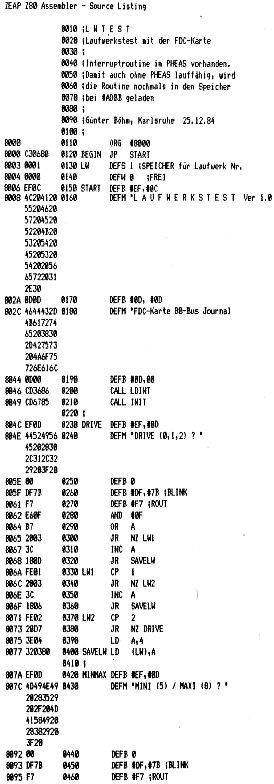

80-Bus Journal |
Okt./Nov./Dezember 1984 · Ausgabe 4 |
Zum Testen meines neu angeschlossenen 8 Zoll Laufwerks war mir der Einsatz der Testroutinen aus Heft 9/83 etwas zu umständlich. So habe ich ein neues Programm erstellt, das durch Menüführung die alten Routinen benutzerfreundlich einsetzt.
Man kann beliebige Laufwerke anwählen und hat immer eine Kontrolle über seine Eingaben durch Reaktionen des Programms auf dem Bildschirm.
Will man mehrfach die gleichen Parameter testen (z.B. wiederholtes Lesen von Spur 10 Sektor 3 in Speicher ab 1000) so wird bei der Anfrage „Parametereingabe“ einfach die Returntaste gedrückt.
Ein Nachteil bei der Eingabe ist es, daß die Zahlen in Hex erwartet werden. Dies sollte man beachten.
Eine Sache ist mir auf gefallen: nach READ TRACK wird immer der Fehlercode „LOST DATA“ ausgegeben (und das, obwohl nachprüfbar richtig eingelesen wurde). Wer kann herausfinden, weshalb der Controller dieses Bit setzt?
Zur Demonstration der Eingaben und Bildschirmausgaben hier ein Anwendungsprotokoll:
-- NAS-SYS 3 --
Laufwerkstest Ver 1.0
FDC-Karte 80-Bus Journal
DRIVE (0,1,2) ? 0
MINI (5) / MAXI (8) ? 5
DENSITY (S,D) ? D
LAUFWERKSTEST / DRIVE 0 / 5 Zoll / DOUBLE DENSE
HOME H
SEEK S
READ R
WRITE W
READ TRACK T
NASSYS N
HOME
FDC-STATUS 44
Write Protect
Track 0
weiter mit beliebiger Taste
LAUFWERKSTEST / DRIVE 0 / 5 Zoll / DOUBLE DENSE
HOME H
SEEK S
READ R
WRITE W
READ TRACK T
NASSYS N
Parameter-Eingabe
Speicherbereich ?
1000
SPUR ?
10
SEKTOR ? 1 Read Track / Spur 10 FDC-STATUS 04 Lost Data weiter mit beliebiger Taste

| Seite 17 von 52 |
|---|